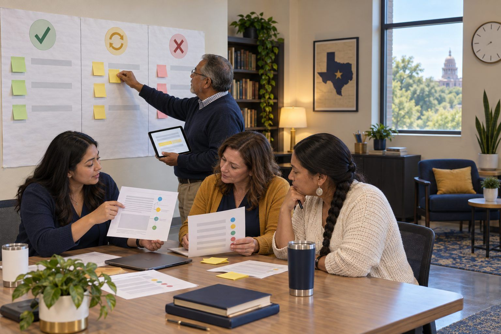

Professional learning · Coaches, Teachers, Librarians · 90 minutes
Tool Tryout Lab
Instead of a demo and a vote, teacher teams test an emerging AI feature inside a GRITS lesson-study loop, watch students rather than the tool, and decide from student evidence.
Teachers ask "Can we use this?" about a new AI feature almost weekly. The usual answer is a demo and a show of hands. This lab replaces the vote with a structured tryout built on the GRITS lesson study model: the team sets a learning goal from student data, picks the research-based strategy the tool must serve, tries the fictional MarginMate annotation tool's new AI Hints feature as learners, plans a classroom tryout where colleagues observe students instead of the teacher, and then analyzes returned student work from two teams to reach a decision with a rubric. The possible decisions are adopt, adjust and retry, or drop, and adjust is the most common honest answer.
In this packet
- Handout A: MarginMate Tryout Packet (reading)
- Handout B: Tryout Decision Rubric (rubric)
- Handout C: GRITS Tryout Plan (organizer)
TCEA ELE indicators
- C2.2 I can evaluate the effectiveness of educational technology tools.
- C2.3 I am aware of emerging technologies and their potential in education.
- C5.2 I can facilitate productive discussions and problem-solving sessions.
- C4.1 I know how to design and deliver effective professional development sessions.
- AI3.2 I can evaluate the effectiveness of AI-enhanced learning interventions.
Full facilitator guide: mglearn.github.io/eles/activities/tool-tryout-lab.html
Handout A for Tool Tryout Lab
MarginMate Tryout Packet
Everything here is fictional: the tool, the vendor, the school, and the students. Read the profile and stand-in text in the Explore step; read the returned evidence in the Apply step.
1The email. "Hi! MarginMate just added AI Hints. When a student highlights a passage, it suggests a label like 'claim' or 'evidence' and explains why. Can we turn it on for the whole department for the argument unit? The demo looked amazing. — Priya, Grade 8 ELA, Live Oak Hills Middle School"
2Tool profile (from the fictional vendor's page). MarginMate is an annotation tool the district already uses. The new AI Hints feature "boosts close reading and saves teachers hours." Hints appear in a pop-up beside the highlight. The terms say student annotations "may be used to improve our models" unless the district opts out in its contract. No one on campus knows whether the district has opted out. Accessibility notes: none listed for the pop-up.
3Student data that prompted the goal. On the last argument unit, most Grade 8 students highlighted large blocks of text but could not say which sentence was the author's claim and which sentences were evidence. Their written responses summarized the article instead of analyzing its argument.
4Stand-in text for the Explore step (fictional op-ed). "Our town's library should stay open until 9 p.m. Many students have nowhere quiet to study after dinner. When the Willow Creek branch tried later hours last spring, the librarians reported that study rooms were full most evenings. Some worry about the cost, but the extra hours would cost less than the new parking lot the council approved. A town that says it values education should keep its library open when students need it."
5Printed AI Hints for the stand-in. Highlight of sentence 1 → Hint: "Claim. This is the author's main position." Highlight of sentence 3 → Hint: "Evidence. The author supports the claim with a report from a trial." Highlight of sentence 4 → Hint: "Counterargument and rebuttal. The author addresses a concern." Highlight of sentence 5 → Hint: "Evidence. The author's purpose is to inform readers about library budgets." (One of these hints is wrong. Sentence 5 restates the claim as an appeal to values, and the op-ed's purpose is to persuade.)
6Returned evidence, Team Cypress (Grade 8 ELA, two sections). Section 1 had hints on from the start; Section 2 could open a hint only after labeling a passage themselves. Observer notes: in Section 1, labels were correct more often, but most written explanations repeated the hint's wording, and three students said "I just clicked until it told me." In Section 2, students were slower, several changed a label after reading the hint, and two students wrote that they disagreed with a hint and explained why. One student using a screen reader could not reach the hint pop-up in either section.
7Returned evidence, Team Pecan (Grade 11 U.S. history, one section, primary source speech). Hints were available after a first attempt. Observer notes: English learners used the hint explanations as sentence models and wrote fuller claims than on the last unit. The tool labeled a sentence about the speaker's hopes as "evidence"; two students challenged it in their pair discussion and the teacher used the error with the whole class. The teacher noted that the hints saved no grading time, but students' written claims were easier to find in their responses.
Handout B for Tool Tryout Lab
Tryout Decision Rubric
Score from the returned student evidence, not the demo. Cite a specific student action for every score.
| Criterion | Not ready | Adjust and retry | Works for this purpose | Strong fit |
|---|---|---|---|---|
| Serves the learning goal and strategy | The tool's output is unrelated to the goal or replaces the strategy. | The tool touches the goal but its default setup works against the strategy (for example, hints before any student attempt). | The tool supports the named strategy under a clear setup. | The tool strengthens the strategy in ways paper could not, and the team can show how. |
| Student thinking vs. tool thinking | Student work mostly repeats the tool's wording. | Some students reason on their own; many copy the tool. | Most students attempt first and use the tool to check or revise. | Students question, correct, or reject the tool's output with reasons. |
| Accuracy and verification | Errors went unnoticed by students and teachers. | Errors were caught by the teacher only. | Some students caught errors when prompted. | Catching and explaining tool errors became part of the lesson. |
| Privacy and data | Data terms are unknown or allow student work to train the product. | Terms are known but the district opt-out is not yet confirmed. | District terms protect student work; no personal data is collected beyond the approved account. | Terms are confirmed, documented for the PLC, and explained to students in plain language. |
| Access and inclusion | Some students cannot use the feature at all. | Barriers exist (for example, screen reader access) with no fix planned. | The feature works for all students in the tryout, with minor supports. | The feature measurably widened access, for example for English learners, with no student left out. |
Handout C for Tool Tryout Lab
GRITS Tryout Plan
Fill in G and R before you look at the tool closely. The tryout is one or two lessons.
| GRITS phase | Our plan | Evidence we'll bring back |
|---|---|---|
| G · Goal setting: the learning gap in our student data and the outcome we want | ||
| R · Research: the proven strategy the tool must serve, our formative checkpoints, and supports for different learners | ||
| I · Implementation: class, lesson, comparison, what observers watch in students, privacy check, access check, date | ||
| T · Team analysis: stems we'll use, rubric scores, misconceptions we found, our decision and its conditions | ||
| S · Strengthening and sharing: what changes before reteaching, how we document it for the PLC, our reply to the requester |